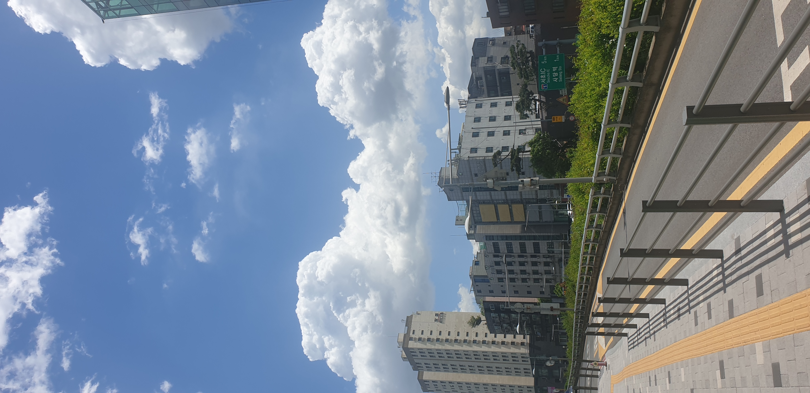

Uploaded Scene Analysis
Narrative Script
맑고 푸른 하늘 위로 거대한 뭉게구름이 웅장하게 피어오른 어느 여름날의 도심 풍경입니다. 강렬한 햇살을 머금은 구름은 눈이 시리도록 하얗게 빛나며, 깊고 투명한 푸른색 하늘과 대비를 이뤄 청량한 분위기를 자아냅니다.
시선을 아래로 옮기면 현대적인 건축물들이 스카이라인을 메우고 있습니다. 좌측에는 'HILLS'라는 문구가 적힌 높은 아파트 단지가 우뚝 솟아 있고, 그 옆으로 'FINE HILL' 등 다양한 상업 및 주거용 건물들이 질서 정연하게 늘어서 있습니다. 건물들의 무채색 외벽은 도심의 정갈함을 더해줍니다.
화면의 하단부는 보행자를 위한 인도와 도로가 차지하고 있습니다. 바닥에는 시각장애인을 위한 노란색 점자 블록이 곧게 뻗어 있으며, 보도 옆으로는 튼튼한 금속제 난간이 설치되어 안전한 경계를 이룹니다. 난간 너머로는 짙은 녹색의 수풀이 무성하게 자라나 회색빛 도심 속에 생동감 넘치는 초록빛 에너지를 불어넣습니다.
수풀 사이로 고개를 내민 초록색 도로 표지판은 이곳의 위치를 짐작게 합니다. '서초 IC'까지 5km, '사당역'까지 1km 남았음을 알리는 이정표는 이곳이 서울의 주요 거점을 잇는 활기찬 길목임을 보여줍니다.
따스한 햇살과 선명한 색조, 그리고 고요하면서도 활기찬 도시의 기반 시설들이 어우러진 이 장면은, 바쁜 일상 속에서도 잠시 고개를 들어 하늘을 바라보게 만드는 평화로운 오후의 순간을 담고 있습니다.
Audio Narration
Korean Voice Synthesis
Press play to listen